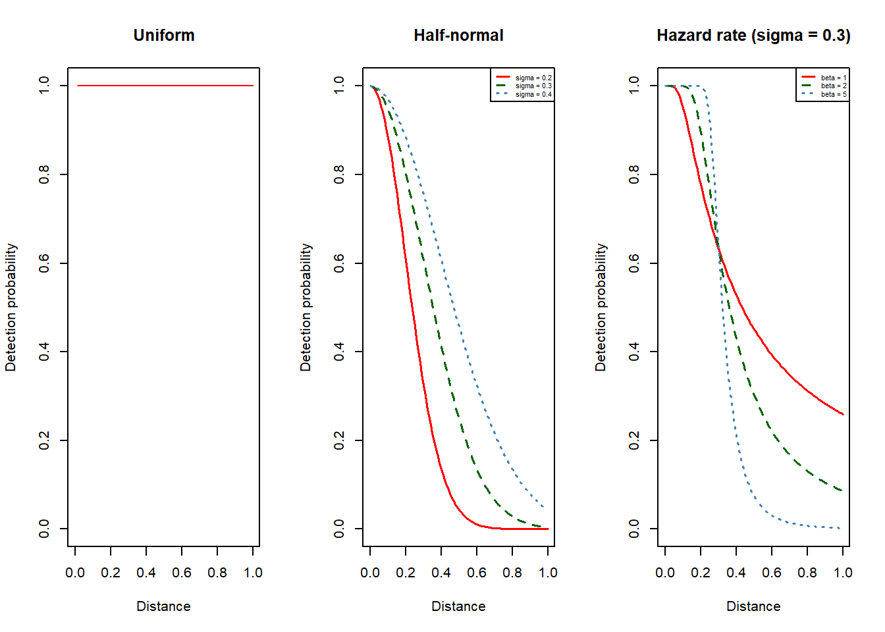

Chapter 3 Distance sampling
Distance sampling is another widely used method in ecological research or estimating animal abundance and density. Here we focus on conventional distance sampling, the fundamental distance sampling techniques among all.
3.1 3.1 Line transect sampling
Usually, observers travel along the transect lines that are strategically placed across the study area to ensure coverage of different habitats and representative sampling of the population. Upon detecting an object, they record the perpendicular distance from the line to the identified object. In some cases, additional information, such as the angle of detection or group size are also recorded for the purpose of multiple-covariate distance sampling (MCDS) analysis.
Detection function \(g(x)\)describes the probability of detecting an animal at different distances from the transect lines. A fundamental assumption is that all objects present on the line are detected, i.e. \(g(0)=1\) ; however it is expected that objects become progressively more challenging to detect as their distance from the line increases, leading to a decrease in detection with increasing distance. Commonly used detection functions include uniform, half-normal and hazard rate. Example of adjustment terms include cosine, Hermite polynomial series and simple polynomial series.
detection <- function(){
hn.sigma <- c(0.2, 0.3, 0.4)
hr.sigma <- 0.3; hr.beta <- c(1, 2, 5)
x <- seq(0, 1, 0.01)
y.unif <- x/x
y.hn1 <- exp(-x^2/(2*hn.sigma[1]^2)); y.hn2 <- exp(-x^2/(2*hn.sigma[2]^2)); y.hn3 <- exp(-x^2/(2*hn.sigma[3]^2))
y.hr1 <- 1-exp(-(x/hr.sigma)^(-hr.beta[1])); y.hr2 <- 1-exp(-(x/hr.sigma)^(-hr.beta[2])); y.hr3 <- 1-exp(-(x/hr.sigma)^(-hr.beta[3]))
par(mfrow=c(1,3))
plot(x, y.unif, type="l", col="red", xlab="Distance", ylab="Detection probability", main="Uniform", ylim=c(0, 1))
plot(x, y.hn1, type="l", lwd=1.5, col="red", xlab="Distance", ylab="Detection probability", main="Half-normal", ylim=c(0, 1))
lines(x, y.hn2, col="darkgreen", lty=2, lwd=1.5)
lines(x, y.hn3, col="steelblue", lty=3, lwd=1.5)
legend(x = "topright", legend = c("sigma = 0.2", "sigma = 0.3", "sigma = 0.4"),
lty = c(1, 2, 3), col = c("red", "darkgreen", "steelblue"), lwd = 1.5, cex=0.5)
plot(x, y.hr1, type="l", lwd=1.5, col="red", xlab="Distance", ylab="Detection probability", main="Hazard rate (sigma = 0.3)", ylim=c(0, 1))
lines(x, y.hr2, col="darkgreen", lty=2, lwd=1.5)
lines(x, y.hr3, col="steelblue", lty=3, lwd=1.5)
legend(x = "topright", legend = c("beta = 1", "beta = 2", "beta = 5"),
lty = c(1, 2, 3), col = c("red", "darkgreen", "steelblue"), lwd = 1.5, cex=0.5)
}detection() # plot detection functions
Once the detection function is fitted, the estimator can calculate animal density and thus abundance by accounting for the area surveyed and the proportion of animals detected at different distances. The obtained abundance estimates can be extrapolated to the entire study area if the survey design is representative of the entire habitat.
Theorem 2.1 Animal density \(D\) is estimated by: \[\hat{D} = \frac{n}{2wL\hat{P}_a}\]
\[\hat{P}_a = \frac{\int_{0}^{w}\hat{g}(x)dx}{w}\]
where:
\(n\) is the number of animals detected.
\(w\) is the half-width of the strip.
\(L\) is the lengths of transect lines.
\(\hat{P}_a\) is the probability that a randomly chosen animal within the surveyed area is detected.
\(\hat{g}(x)\) is the estimate of detection function.
3.2 3.2 Simulation study
In this section, we will present the results of a simulation study that aims to evaluate the performance of the conventional line transect sampling. We will create artificial datasets with with known population sizes, detectability patterns to assess the accuracy and precision of the method under different scenarios.
For each scenario we simulate 99 surveys, with each survey having a simulated sample size \(N\) = 500.
3.2.1 Scenario 1: When the underlying assumptions are met
We investigate how well the method performs when \(p(0) = 1\) assumption is met and animals are uniformly distributed. For each replication, we will compare the estimated abundance to the true population size (\(N\) = 500). The detection function chosen is half-normal with \(\sigma = 0.4\) . We then calculate the mean estimate and the variance of the estimates across replications and thus check if true population size is within the confidence interval of the estimates.
The result below shows that the abundance estimate is unbiased as the 95% CI covers the true population size and the mean percentage relative bias is very close to 0.
sim.data.ds <- function(n, sigma){
#browser()
## 1. generate n uniform points
df <- data.frame(id=rep(1:n, each = 2), obs=rep(1:2, n),
x=NA, y=NA, distance=NA, detect=NA, angle=NA)
df$x[df$obs==1] <- runif(n, 0, 2)
df$y[df$obs==1] <- runif(n, 0, 2)
df$distance[df$obs==1] <- df$x[df$obs==1] - 1
## 2. Points moving away from transect
# moving angle & distance
nleft <- nrow(df[df$x <= 1 & df$obs==1, ])
nright <- nrow(df[df$x > 1 & df$obs==1, ])
angleleft <- rwrappedcauchy(nleft, mu=circular(pi), rho=0.8, control.circular=list(units="radian"))
df$angle[df$x <= 1 & df$obs==1] <- as.numeric(angleleft)
angleright <- rwrappedcauchy(nright, mu=circular(0), rho=0.8, control.circular=list(units="radian"))
df$angle[df$x > 1 & df$obs==1] <- as.numeric(angleright)
dist <- (1-abs(df$distance[df$obs==1]))*runif(n, 0, 0.2)*3
df$x[df$obs==2] <- df$x[df$obs==1] + dist * cos(df$angle[df$obs==1])
df$y[df$obs==2] <- df$y[df$obs==1] + dist * sin(df$angle[df$obs==1])
df$distance[df$obs==2] <- df$x[df$obs==2] - 1
## 3. detection probability, half-normal
p1 <- exp(-abs(df$distance[df$obs==1])^2/(2*sigma^2))
p2 <- exp(-abs(df$distance[df$obs==2])^2/(2*sigma^2))
df$detect[df$obs==1] <- rbinom(n, 1, p1) # first situation
df$detect[df$obs==2] <- rbinom(n, 1, p2) # second situation
df$detect[abs(df$distance) > 1] <- 0 # truncation
## 4. return
df[ , c("angle")] <- list(NULL)
return(df)
}ds.analysis <- function(n, sigma, movement){
#browser()
df <- sim.data.ds(n, sigma)
if (movement == TRUE){
df1 <- subset(df, df$obs==2 & df$detect==1)
n <- nrow(df1)
new_df1 <- data.frame(Region.Label = rep(1, n), Area = rep(4, n),
Sample.Label = rep(1, n), Effort = rep(2, n),
distance = df1$distance)
df.ds <- ds(new_df1, truncation=1, transect="line", key="hn", order=0, monotonicity = "none")
}else{
df1 <- subset(df, df$obs==1 & df$detect==1)
n <- nrow(df1)
new_df1 <- data.frame(Region.Label = rep(1, n), Area = rep(4, n),
Sample.Label = rep(1, n), Effort = rep(2, n),
distance = df1$distance)
df.ds <- ds(new_df1, truncation=1, transect="line", key="hn", monotonicity = "none")}
return(c(df.ds$ddf$Nhat, df.ds$dht$individuals$N$lcl, df.ds$dht$individuals$N$ucl))
}
boot.ds <- function(n, sigma, movement){
input <- rep(n, 99)
ests <- lapply(input, ds.analysis, sigma, movement)
df.ests <- data.frame(t(sapply(ests,c)))
colnames(df.ests) <- c("N.hat", "lcl", "ucl")
return(df.ests)
}ests.ds <- boot.ds(500, 0.4, FALSE) # bootstrap estimates
ci.ds <- mean(ests.ds$N.hat) + c(-1, 1)*1.96*sqrt(var(ests.ds$N.hat)/99) # confidence interval
bias.ds <- mean((ests.ds$N.hat-500)/500) # mean relative bias
check.pcover.ds <- 500 > ests.ds$lcl & 500 < ests.ds$ucl
coverage.p.ds <- length(check.pcover.ds[check.pcover.ds==TRUE])/length(check.pcover.ds) # coverage probablity
ci.ds; sprintf("%1.2f%%", bias.ds*100); coverage.p.ds## [1] 492.1211 509.5555## [1] "0.17%"## [1] 0.9797983.2.2 Scenario 2: When animals show responsive movement
Apart from assuming that objects on the transect line are certain to be detected, another model assumption of distance sampling is that objects are detected at their initial location. Here we aim to examine the validity of method when animals move in response to the observer (away from transect line in this case) before being detected. The detection function chosen is half-normal with \(\sigma = 0.4\) . The result above shows that the abundance estimate is negatively unbiased with mean percentage relative bias being about 50%.
ds.result <- function(n, sigma, movement){
#browser()
par(mfrow=c(1,2))
## plot 1: animal distribution
df <- sim.data.ds(n, sigma)
ddist <- density(df$distance[df$obs==2]+1)
plot(ddist, main="Animal distribution after responsive movement", xlab="", ylab="")
polygon(ddist, col="lightgrey")
## plot 2: histogram of bootstrap abundance estimates
ests <- boot.ds(n, sigma, movement)
est.N <- ests$N.hat
hist(est.N, main=paste("Abudance estimates"), xlab=NULL, ylab = NULL, prob=TRUE)
points(mean(est.N),0,pch=19,col="red")
arrows(quantile(est.N, 0.025),0,quantile(est.N, 0.975),0,angle=90,code=3,col="red")
return(ests)
}ests.ds2 <- ds.result(500, 0.4, TRUE)
ci.ds2 <- mean(ests.ds2$N.hat) + c(-1, 1)*1.96*sqrt(var(ests.ds2$N.hat)/99) # confidence interval
bias.ds2 <- mean((ests.ds2$N.hat-500)/500) # mean relative bias
check.pcover.ds2 <- 500 > ests.ds2$lcl & 500 < ests.ds2$ucl
coverage.p.ds2 <- length(check.pcover.ds2[check.pcover.ds2==TRUE])/length(check.pcover.ds2) # coverage probablity
ci.ds2; sprintf("%1.2f%%", bias.ds2*100); coverage.p.ds2## [1] 241.2021 249.2616## [1] "-50.95%"## [1] 0tab.ds <- data.frame(scenario=c("No responsive movement", "Has responsive movement"), mean.relative.bias=c(bias.ds, bias.ds2), coverage.probablity=c(coverage.p.ds, coverage.p.ds2))
knitr::kable(tab.ds, caption = 'A table of results from both scenarios', booktabs = TRUE)| scenario | mean.relative.bias | coverage.probablity |
|---|---|---|
| No responsive movement | 0.0016765 | 0.979798 |
| Has responsive movement | -0.5095363 | 0.000000 |
3.3 Further Reading
Buckland, S.T., Rexstad, E.A., Marques, T.A. and Oedekoven, C.S. (2015). Distance Sampling: Methods and Applications. Springer International Publish. https://doi.org/10.1007/978-3-319-19219-2